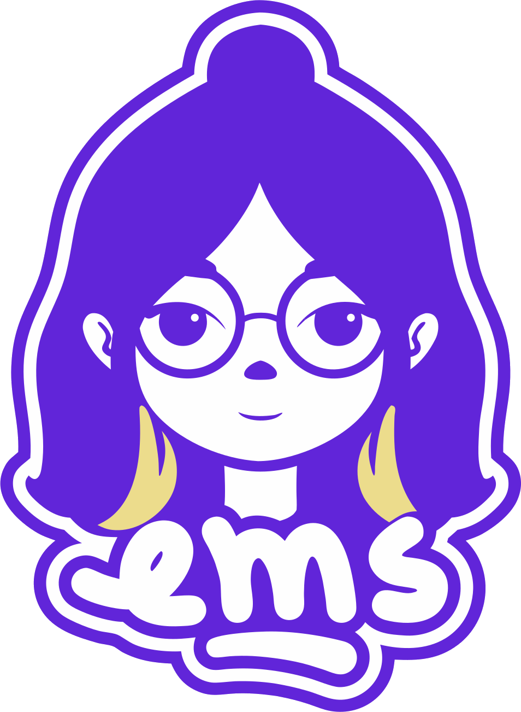

<!doctype html>
<html lang="pt-BR">
<head>
<meta charset="utf-8">
<title>Reel EMS: a voz</title>
<style>
@font-face{font-family:"Instrument Serif";src:url(assets/fonts/InstrumentSerif-Regular.ttf);font-weight:400;font-style:normal}
@font-face{font-family:"Instrument Serif";src:url(assets/fonts/InstrumentSerif-Italic.ttf);font-weight:400;font-style:italic}
@font-face{font-family:"Poppins";src:url(assets/fonts/Poppins-Regular.ttf);font-weight:400}
@font-face{font-family:"Poppins";src:url(assets/fonts/Poppins-Medium.ttf);font-weight:500}
@font-face{font-family:"Poppins";src:url(assets/fonts/Poppins-SemiBold.ttf);font-weight:600}
:root{
  --ivory:#fffbde;--ivory-2:#f4edcb;--tinta:#2a1433;--ameixa:#3d1c46;--creative-purple:#482952;--plum:#5b216c;
  --violeta:#6225d8;--violeta-2:#7b4df2;--lavanda:#c0a5c4;--lavanda-2:#e4d6e6;--wine:#9e122c;--pink:#dd34a8;--manteiga:#f2cf7a;
  --serif:"Instrument Serif",Georgia,serif;--sans:"Poppins",system-ui,sans-serif;
}
html,body{margin:0;padding:0;background:#111}
*{box-sizing:border-box}
#stage{position:relative;width:1080px;height:1920px;overflow:hidden;background:var(--ameixa);font-family:var(--sans)}
#stage .a{position:absolute}
.c{transform:translate(-50%,-50%)}
.serif{font-family:var(--serif);font-weight:400;letter-spacing:-0.02em;line-height:.85;white-space:nowrap}
.serif em{font-style:italic}
.lead{font:500 52px/1.1 var(--sans);white-space:nowrap}
.label{font:400 26px/1.2 var(--sans);letter-spacing:.08em;white-space:nowrap}
.cap{font:500 44px/1.28 var(--sans);text-align:center;width:900px;left:90px}
.cap span{display:inline}
.tag{font:500 34px/1 var(--sans);padding:.32em .7em .32em .5em;border-radius:6px;color:var(--ivory);white-space:nowrap}
.tag svg{position:absolute;left:-24px;bottom:-26px}
.sel{border:3px solid var(--violeta)}
.sel i{position:absolute;width:20px;height:20px;background:var(--ivory);border:3px solid var(--violeta)}
.sel i:nth-child(1){left:-11px;top:-11px}.sel i:nth-child(2){right:-11px;top:-11px}
.sel i:nth-child(3){left:-11px;bottom:-11px}.sel i:nth-child(4){right:-11px;bottom:-11px}
.stamp{padding:22px;-webkit-mask:linear-gradient(#000 0 0) content-box,radial-gradient(circle 9px,transparent 96%,#000) -13px -13px/26px 26px round;
  mask:linear-gradient(#000 0 0) content-box,radial-gradient(circle 9px,transparent 96%,#000) -13px -13px/26px 26px round}
.sticker{font-family:var(--serif);-webkit-text-stroke:22px var(--ivory);paint-order:stroke fill;filter:drop-shadow(8px 10px 0 rgba(42,20,51,.35));white-space:nowrap;line-height:.9}
.key{font:600 46px/1 var(--sans);background:var(--ivory);color:var(--tinta);border:4px solid var(--tinta);border-radius:22px;display:flex;align-items:center;justify-content:center}
#grain{position:absolute;inset:0;width:1080px;height:1920px;opacity:.07;pointer-events:none;mix-blend-mode:normal}
</style>
</head>
<body>
<div id="stage"><div id="root"></div></div>
<script>
/* ===================== tokens ===================== */
const K={ivory:'#fffbde',ivory2:'#f4edcb',tinta:'#2a1433',ameixa:'#3d1c46',cp:'#482952',plum:'#5b216c',
  violeta:'#6225d8',violeta2:'#7b4df2',lavanda:'#c0a5c4',lavanda2:'#e4d6e6',wine:'#9e122c',pink:'#dd34a8',manteiga:'#f2cf7a'};
const DARK=new Set(['ameixa','cp','plum','violeta','violeta2','wine','tinta']);
const FPS=30;

/* ===================== roteiro ===================== */
// cada beat = um trecho da narração; shot = cena visual (pode juntar beats)
const BEATS=[
 ['voz',      'tem uma voz dentro da minha cabeça'],
 ['repete',   'que repete, quase todo dia,'],
 ['criar',    'que eu não sei criar nada.'],
 ['copia',    'que tudo que eu faço é cópia de alguém.'],
 ['pedaco',   'que eu só junto pedacinhos do que eu vi por aí e finjo que é meu.'],
 ['acredito', 'e eu acredito nela.'],
 ['comeco',   'acredito tanto que às vezes eu nem começo.'],
 ['neuro',    'eu sou neurodivergente.'],
 ['sabota',   'e o meu cérebro tem esse talento estranho de se sabotar:'],
 ['camadas',  'ele guarda cada erro com carinho'],
 ['camadas',  'e apaga todas as provas a meu favor.'],
 ['provas',   'então hoje eu resolvi falar essas provas em voz alta.'],
 ['p1',       'eu aprendi a tocar vários instrumentos sozinha.'],
 ['p1',       'ninguém sentou do meu lado pra me ensinar.'],
 ['p2',       'aprendi crochê do mesmo jeito, ponto por ponto, desmanchando e recomeçando.'],
 ['p3',       'tenho duas formações.'],
 ['p4',       'moro sozinha desde os dezessete anos,'],
 ['inventa',  'e desde então eu venho inventando um jeito de dar conta da vida:'],
 ['conta',    'da conta que não fecha,'],
 ['pesa',     'do dia que pesa,'],
 ['casa',     'da casa que é só minha.'],
 ['gatos',    'e ainda cuido de três gatinhos que acham que o mundo gira em volta deles.'],
 ['gatos',    'e, sinceramente, gira mesmo.'],
 ['isso',     'se isso não é criar, eu não sei o que é.'],
 ['inspira',  'todo mundo se inspira em alguém.'],
 ['vazio',    'ninguém tira nada do vazio.'],
 ['mao',      'o que muda é a mão que pega aquilo e transforma em outra coisa.'],
 ['recap',    'e a minha já transformou muita coisa.'],
 ['faltou',   'talvez nunca tenha faltado criatividade em mim.'],
 ['alto',     'talvez seja só essa voz, que fala alto demais.'],
 ['final',    'e eu tô aprendendo, aos poucos,'],
 ['final',    'a falar mais alto que ela.'],
];
const END_CARD=3.6;

/* ===================== timing ===================== */
// estimativa de ritmo; se window.TIMINGS existir (tempos reais da narração), usa ele
function buildTimeline(){
  const words=[];let t=0.35;
  BEATS.forEach(([shot,text],bi)=>{
    text.split(/\s+/).forEach((w,wi,arr)=>{
      const core=w.replace(/[^\p{L}\p{N}]/gu,'');
      const d=Math.max(0.17,0.058*core.length+0.08);
      words.push({w,bi,t0:t,t1:t+d});t+=d;
      if(/[,]$/.test(w))t+=0.26; else if(/[:]$/.test(w))t+=0.38; else if(/[.]$/.test(w))t+=0.5;
    });
    t+=0.18;
  });
  if(window.TIMINGS&&window.TIMINGS.length===words.length){
    window.TIMINGS.forEach((x,i)=>{words[i].t0=x[0];words[i].t1=x[1];});
  }
  const beats=BEATS.map(([shot,text],bi)=>{const ws=words.filter(w=>w.bi===bi);return{shot,text,words:ws,t0:ws[0].t0,t1:ws[ws.length-1].t1};});
  // shots
  const shots=[];beats.forEach((b,i)=>{const last=shots[shots.length-1];if(last&&last.id===b.shot)last.beats.push(b);else shots.push({id:b.shot,beats:[b]});});
  const audioEnd=words[words.length-1].t1;
  shots.forEach((s,i)=>{s.t0=i===0?0:s.beats[0].t0-0.06;});
  shots.forEach((s,i)=>{s.t1=i<shots.length-1?shots[i+1].t0:audioEnd+0.7;});
  shots.push({id:'end',beats:[],t0:audioEnd+0.7,t1:audioEnd+0.7+END_CARD});
  return{words,beats,shots,duration:audioEnd+0.7+END_CARD};
}

/* ===================== easing ===================== */
const clamp=(x,a=0,b=1)=>Math.min(b,Math.max(a,x));
const P=(T,a,d)=>clamp((T-a)/d);
const out3=x=>1-Math.pow(1-x,3);
const inOut=x=>x<.5?4*x*x*x:1-Math.pow(-2*x+2,3)/2;
const back=x=>{const c1=1.9,c3=c1+1;return 1+c3*Math.pow(x-1,3)+c1*Math.pow(x-1,2)};
const spring=s=>s<=0?0:1-Math.exp(-6.5*s)*Math.cos(11*s);
const lerp=(a,b,x)=>a+(b-a)*x;
// número pseudoaleatório determinístico
const rnd=i=>{const x=Math.sin(i*127.1+311.7)*43758.5453;return x-Math.floor(x)};

/* ===================== peças ===================== */
const A=(x,y,html,style='',cls='')=>`<div class="a ${cls}" style="left:${x}px;top:${y}px;${style}">${html}</div>`;
const pop=(T,t0,dur=.5)=>{const p=P(T,t0,dur);return{s:p<=0?0:back(p),o:clamp(p*3)}};
const tf=(...xs)=>`transform:${xs.join(' ')};`;
const ink=bg=>DARK.has(bg)?K.ivory:K.tinta;
const destaque=bg=>DARK.has(bg)?K.manteiga:K.pink;
const cursorSVG=(w=34,fill=K.tinta,stroke=K.ivory)=>`<svg width="${w}" height="${w}" viewBox="0 0 24 24"><path d="M3 2 L21 10 L12.5 12.5 L9 21 Z" fill="${fill}" stroke="${stroke}" stroke-width="1.6" stroke-linejoin="round"/></svg>`;
const tag=(text,bg)=>`<span class="tag a" style="position:relative;display:inline-block;background:${bg}">${text}${cursorSVG()}</span>`;
const selBox=(w,h,color=K.violeta,handle=K.ivory)=>`<div class="sel a" style="left:0;top:0;width:${w}px;height:${h}px;border-color:${color}">${'<i style="border-color:'+color+';background:'+handle+'"></i>'.repeat(4)}</div>`;
const hero=(word,idx,size,color,accent)=>{const a=[...word];return `<span class="serif" style="font-size:${size}px;color:${color}">${a.map((ch,i)=>i===idx?`<em style="color:${accent}">${ch}</em>`:ch).join('')}</span>`};
const drawPath=(d,p,stroke,w,extra='')=>`<path d="${d}" pathLength="1" fill="none" stroke="${stroke}" stroke-width="${w}" stroke-linecap="round" stroke-linejoin="round" stroke-dasharray="1" stroke-dashoffset="${1-clamp(p)}" ${extra}/>`;

// estrela em retícula (canvas → dataURL), cacheada por cor
const _star={};
function halftoneStar(color,size=900){
  const key=color+size;if(_star[key])return _star[key];
  const c=document.createElement('canvas');c.width=c.height=size;const g=c.getContext('2d');
  const cx=size/2,cy=size/2,R=size*.49,r=R*.45;const pts=[];
  for(let i=0;i<10;i++){const a=-Math.PI/2+i*Math.PI/5;const rr=i%2?r:R;pts.push([cx+rr*Math.cos(a),cy+rr*Math.sin(a)]);}
  const path=new Path2D();pts.forEach((p,i)=>i?path.lineTo(...p):path.moveTo(...p));path.closePath();
  g.fillStyle=color;const step=size/64;
  for(let y=step/2;y<size;y+=step)for(let x=step/2;x<size;x+=step){
    if(!g.isPointInPath(path,x,y))continue;
    const d=Math.hypot(x-cx,y-cy)/R;const rad=step*.48*(1-d*.82);
    if(rad>.6){g.beginPath();g.arc(x,y,rad,0,7);g.fill();}
  }
  return _star[key]=c.toDataURL();
}
const star=(x,y,size,color,rot=0,op=.45)=>A(x,y,``,`opacity:${op};${tf(`rotate(${rot}deg)`)}`);

// grão
const _grain=[];
function makeGrain(){
  for(let k=0;k<4;k++){const c=document.createElement('canvas');c.width=540;c.height=960;const g=c.getContext('2d');const im=g.createImageData(540,960);
    for(let i=0;i<im.data.length;i+=4){const v=Math.random()*255;im.data[i]=im.data[i+1]=im.data[i+2]=v;im.data[i+3]=255;}
    g.putImageData(im,0,0);_grain.push(c.toDataURL('image/jpeg',.8));}
}

/* ===================== ilustrações (originais, traço) ===================== */
const ILL={
 guitar:(p=1,st=K.tinta,fill=K.manteiga)=>`<svg viewBox="0 0 200 420" width="100%" height="100%">
   <path d="M100 232 C62 232 42 260 52 290 C57 305 46 316 46 336 C46 386 80 410 100 410 C120 410 154 386 154 336 C154 316 143 305 148 290 C158 260 138 232 100 232 Z" fill="${fill}" fill-opacity="${clamp(p*2-1)}"/>
   ${drawPath('M100 232 C62 232 42 260 52 290 C57 305 46 316 46 336 C46 386 80 410 100 410 C120 410 154 386 154 336 C154 316 143 305 148 290 C158 260 138 232 100 232 Z',p*1.4,st,7)}
   ${drawPath('M92 240 L92 50 L108 50 L108 240',p*1.6-.2,st,7)}
   ${drawPath('M86 52 L86 14 Q100 6 114 14 L114 52',p*1.6-.3,st,7)}
   <circle cx="100" cy="318" r="${18*clamp(p*2-.8)}" fill="${st}"/>
   ${[96,100,104].map((x,i)=>drawPath(`M${x} 20 L${x} 372`,p*1.5-.5-i*.05,st,2)).join('')}
   ${drawPath('M84 372 L116 372',p*2-1,st,8)}</svg>`,
 yarn:(p=1)=>`<svg viewBox="0 0 220 220" width="100%" height="100%">
   <circle cx="110" cy="110" r="84" fill="${K.pink}" stroke="${K.tinta}" stroke-width="7"/>
   ${['M40 80 C80 60 140 70 180 100','M34 120 C80 96 150 110 190 140','M60 172 C90 140 150 150 172 170','M80 32 C60 80 70 150 110 192','M140 30 C110 80 120 150 150 186'].map(d=>`<path d="${d}" fill="none" stroke="${K.tinta}" stroke-width="5" stroke-linecap="round"/>`).join('')}
   <circle cx="110" cy="110" r="84" fill="none" stroke="${K.tinta}" stroke-width="7"/></svg>`,
 cap:(c1=K.tinta,c2=K.manteiga)=>`<svg viewBox="0 0 200 150" width="100%" height="100%">
   <path d="M45 62 L45 104 C72 126 128 126 155 104 L155 62" fill="${K.ivory}" stroke="${c1}" stroke-width="7" stroke-linejoin="round"/>
   <path d="M100 12 L192 48 L100 84 L8 48 Z" fill="${c1}" stroke="${c1}" stroke-width="7" stroke-linejoin="round"/>
   <path d="M100 48 L166 64 L166 108" fill="none" stroke="${c2}" stroke-width="6" stroke-linecap="round"/>
   <circle cx="166" cy="114" r="10" fill="${c2}"/></svg>`,
 key:(c=K.manteiga,st=K.tinta)=>`<svg viewBox="0 0 120 320" width="100%" height="100%">
   <circle cx="60" cy="62" r="42" fill="none" stroke="${st}" stroke-width="26"/><circle cx="60" cy="62" r="42" fill="none" stroke="${c}" stroke-width="14"/>
   <path d="M50 100 L50 290 L70 290 L70 270 L94 270 L94 250 L70 250 L70 230 L88 230 L88 210 L70 210 L70 100 Z" fill="${c}" stroke="${st}" stroke-width="6" stroke-linejoin="round"/></svg>`,
 house:(p=1,st=K.ivory,win=0)=>`<svg viewBox="0 0 300 300" width="100%" height="100%">
   <rect x="66" y="166" width="44" height="44" fill="${K.manteiga}" opacity="${win}"/>
   ${drawPath('M40 140 L150 40 L260 140 L260 272 L40 272 Z',p*1.3,st,8)}
   ${drawPath('M200 86 L200 50 L228 50 L228 112',p*1.6-.4,st,8)}
   ${drawPath('M126 272 L126 186 L174 186 L174 272',p*1.6-.5,st,8)}
   ${drawPath('M66 166 L110 166 L110 210 L66 210 Z',p*1.6-.6,st,8)}
   <circle cx="164" cy="232" r="${5*clamp(p*2-1)}" fill="${st}"/></svg>`,
 cat:(body,eyeLook=0,blink=1,tail=0)=>`<svg viewBox="0 0 200 250" width="100%" height="100%" style="overflow:visible">
   <path d="M142 226 C${190+tail*8} 226 ${196+tail*10} ${160-tail*20} ${170+tail*6} ${146-tail*14}" fill="none" stroke="${K.tinta}" stroke-width="9" stroke-linecap="round"/>
   <path d="M56 232 C38 182 50 124 100 116 C150 124 162 182 144 232 Z" fill="${body}" stroke="${K.tinta}" stroke-width="7" stroke-linejoin="round"/>
   <path d="M60 64 L56 16 L94 44 Z M140 64 L144 16 L106 44 Z" fill="${body}" stroke="${K.tinta}" stroke-width="7" stroke-linejoin="round"/>
   <circle cx="100" cy="84" r="50" fill="${body}" stroke="${K.tinta}" stroke-width="7"/>
   <ellipse cx="80" cy="84" rx="15" ry="${15*blink}" fill="${K.ivory}" stroke="${K.tinta}" stroke-width="4"/><ellipse cx="120" cy="84" rx="15" ry="${15*blink}" fill="${K.ivory}" stroke="${K.tinta}" stroke-width="4"/>
   <circle cx="${82+eyeLook*5}" cy="86" r="${7*blink}" fill="${K.tinta}"/><circle cx="${122+eyeLook*5}" cy="86" r="${7*blink}" fill="${K.tinta}"/>
   <path d="M94 104 L106 104 L100 111 Z" fill="${K.tinta}"/>
   <path d="M70 188 q8 6 16 0 M114 188 q8 6 16 0" fill="none" stroke="${K.tinta}" stroke-width="4" stroke-linecap="round" opacity=".55"/></svg>`,
 globe:(rot)=>`<svg viewBox="0 0 120 120" width="100%" height="100%"><circle cx="60" cy="60" r="52" fill="${K.lavanda}" stroke="${K.tinta}" stroke-width="6"/>
   ${[0,1,2].map(i=>{const k=((rot/60+i/3)%1);const rx=Math.abs(Math.cos(k*Math.PI))*52;return `<ellipse cx="60" cy="60" rx="${rx}" ry="52" fill="none" stroke="${K.tinta}" stroke-width="4"/>`}).join('')}
   <path d="M8 60 L112 60 M18 34 L102 34 M18 86 L102 86" stroke="${K.tinta}" stroke-width="4"/></svg>`,
 heart:(c=K.pink)=>`<svg viewBox="0 0 24 22" width="100%" height="100%"><path d="M12 21 C4 14 1 10 1 6.5 C1 3.4 3.4 1 6.4 1 C8.6 1 10.6 2.3 12 4.3 C13.4 2.3 15.4 1 17.6 1 C20.6 1 23 3.4 23 6.5 C23 10 20 14 12 21 Z" fill="${c}" stroke="${K.tinta}" stroke-width="1.6"/></svg>`,
 note:(c)=>`<svg viewBox="0 0 40 60" width="100%" height="100%"><path d="M30 4 L30 42" stroke="${c}" stroke-width="5" stroke-linecap="round"/><ellipse cx="20" cy="44" rx="12" ry="9" fill="${c}"/><path d="M30 4 C36 12 40 14 38 24" fill="none" stroke="${c}" stroke-width="5" stroke-linecap="round"/></svg>`,
 lock:(c)=>`<svg viewBox="0 0 20 24" width="100%" height="100%"><rect x="2" y="10" width="16" height="12" rx="3" fill="${c}"/><path d="M5 10 V7 a5 5 0 0 1 10 0 V10" fill="none" stroke="${c}" stroke-width="2.5"/></svg>`,
 trash:(c)=>`<svg viewBox="0 0 20 24" width="100%" height="100%"><path d="M2 5 H18 M7 5 V2 H13 V5 M4 5 L5 22 H15 L16 5" fill="none" stroke="${c}" stroke-width="2.4" stroke-linejoin="round"/></svg>`,
};
const stampBox=(inner,bg,w,h)=>`<div class="stamp" style="background:${bg};width:${w}px;height:${h}px"><div style="width:100%;height:100%;background:${bg};position:relative">${inner}</div></div>`;

/* ===================== legenda (palavra por palavra) ===================== */
function caption(ctx,T,o={}){
  const {shot}=ctx;const t=T+shot.t0;
  let b=null;shot.beats.forEach(x=>{if(t>=x.t0-0.06)b=x;});if(!b)return'';
  if(o.only&&!o.only.includes(shot.beats.indexOf(b)))return'';
  const col=o.color||ink(ctx.bg);const y=o.y??1520;
  const html=b.words.map(w=>{const v=t>=w.t0-0.04;const p=P(t,w.t0-0.04,.16);return `<span style="opacity:${v?out3(p):0};display:inline-block;transform:translateY(${(1-out3(p))*14}px)">${w.w}</span>`}).join(' ');
  return A(90,y,html,`color:${col};${o.size?`font-size:${o.size}px;`:''}`,'cap');
}
// tempo (relativo ao shot) da palavra k do beat i
const W=(ctx,i,k)=>{const b=ctx.shot.beats[i];if(!b)return 99;const w=b.words[Math.min(k,b.words.length-1)];return w.t0-ctx.shot.t0};
const WF=(ctx,i,needle)=>{const b=ctx.shot.beats[i];const k=b.words.findIndex(w=>w.w.toLowerCase().replace(/[^\p{L}\p{N}]/gu,'').startsWith(needle));return W(ctx,i,k<0?0:k)};
const B=(ctx,i)=>ctx.shot.beats[i]?ctx.shot.beats[i].t0-ctx.shot.t0:99;

/* ===================== waveform ===================== */
function wave(T,n,w,h,color,amp=1,seed=0,gap=10,clipH=null){
  const bw=(w-(n-1)*gap)/n;let s='';
  for(let i=0;i<n;i++){
    const v=.25+.75*Math.abs(Math.sin(i*.9+T*8.5+seed)*Math.cos(i*.37-T*5.1+seed*2));
    let bh=Math.max(10,v*h*amp);const clip=clipH&&bh>clipH;if(clipH)bh=Math.min(bh,clipH);
    s+=`<div class="a" style="left:${i*(bw+gap)}px;top:${(h-bh)/2}px;width:${bw}px;height:${bh}px;border-radius:${bw/2}px;background:${clip?K.wine:color}"></div>`;
  }
  return `<div class="a" style="left:0;top:0;width:${w}px;height:${h}px">${s}</div>`;
}

/* ===================== cenas ===================== */
const S={};
S.voz={bg:'ameixa',r(T,ctx){
  const p=pop(T,.05,.6);const bw=760,bh=330;
  return star(560,-240,900,K.violeta2,8)+
   A(540,840,`${A(0,-64,`<span class="label" style="color:${K.lavanda}">voz_interna.mp3</span>`)}
     ${selBox(bw,bh,K.ivory,K.ameixa)}${A(50,45,wave(T,22,bw-100,bh-90,K.lavanda,P(T,.2,.5)))}`,
     `width:${bw}px;height:${bh}px;margin-left:${-bw/2}px;margin-top:${-bh/2}px;opacity:${p.o};${tf(`scale(${.7+.3*p.s})`)}`)+
   A(540+bw/2-10,840+bh/2-6,cursorSVG(52),`${tf(`translate(${(1-out3(P(T,.3,.7)))*120}px,${(1-out3(P(T,.3,.7)))*80}px)`)}`)+
   caption(ctx,T);
}};
S.repete={bg:'ivory',r(T,ctx){
  const cells=35,sz=118,gap=16,cols=7;const gw=cols*sz+(cols-1)*gap;const x0=540-gw/2,y0=640;
  const skip=new Set([6,13,23,31,32,33,34]);let filled=0;let s='';
  for(let i=0;i<cells;i++){const cx=x0+(i%cols)*(sz+gap),cy=y0+Math.floor(i/cols)*(sz+gap);
    const ap=pop(T,.02+i*.012,.4);const on=!skip.has(i)&&T>.25+i*.045;if(on)filled++;
    const fp=out3(P(T,.25+i*.045,.18));
    s+=A(cx,cy,`<div style="width:${sz}px;height:${sz}px;border:4px solid ${K.tinta};border-radius:18px;background:${K.ivory2};position:relative">
      <div class="a" style="left:50%;top:50%;width:64px;height:64px;margin:-32px;border-radius:50%;background:${K.violeta};${tf(`scale(${on?back(fp):0})`)}"></div>
      <span class="a" style="left:10px;top:6px;font:500 20px var(--sans);color:${K.wine}">${i+1<=31?i+1:''}</span></div>`,`opacity:${ap.o};${tf(`scale(${.6+.4*ap.s})`)}`);}
  return A(x0,y0-110,`<span class="label" style="color:${K.wine}">repetições este mês</span>`)+
    A(x0+gw,y0-142,`<span class="serif" style="font-size:120px;color:${K.tinta}">${filled}</span>`,`${tf('translateX(-100%)')}`)+s+caption(ctx,T);
}};
S.criar={bg:'violeta',r(T,ctx){
  const tl=W(ctx,0,2),tc=WF(ctx,0,'criar'),tn=WF(ctx,0,'nada');
  const a=pop(T,tl-.05,.4),h=pop(T,tc-.05,.55),n=pop(T,tn,.4);
  return star(-260,1200,1000,K.violeta2,-12)+
   A(540,700,`<span class="lead" style="color:${K.ivory}">que eu não sei</span>`,`opacity:${a.o};${tf(`translate(-50%,-50%) translateY(${(1-a.s)*30}px)`)}`)+
   A(540,960,hero('criar',3,360,K.ivory,K.manteiga),`opacity:${h.o};${tf(`translate(-50%,-50%) scale(${.8+.2*h.s})`)}`)+
   A(540,960,`<svg width="760" height="140" viewBox="0 0 760 140">${drawPath('M20 90 C150 60 300 110 420 70 C540 40 640 90 740 60',out3(P(T,tn-.05,.35)),K.manteiga,22)}</svg>`,`${tf('translate(-50%,-50%) rotate(-3deg)')}`)+
   A(540,1210,`<span class="lead" style="color:${K.ivory};font-size:64px">nada.</span>`,`opacity:${n.o};${tf(`translate(-50%,-50%) scale(${n.s})`)}`);
}};
S.copia={bg:'ivory',r(T,ctx){
  const th=WF(ctx,0,'cópia');const h=pop(T,th-.05,.5);let s='';
  const names=['ideia','ideia copy','ideia copy 2','ideia copy 3','ideia copy 4','ideia final copy'];
  names.forEach((nm,i)=>{const t0=.15+i*.32;const p=pop(T,t0,.35);if(p.o<=0)return;
    const x=170+i*30,y=560+i*62;
    s+=A(x,y,`<div style="width:600px;height:380px;background:${i===names.length-1?K.lavanda2:K.ivory2};border:4px solid ${K.tinta};border-radius:20px;box-shadow:8px 8px 0 ${K.tinta};position:relative">
      <span class="a label" style="left:26px;top:22px;color:${K.wine};font-size:24px">${nm}</span>
      <div class="a" style="left:220px;top:110px;width:160px;height:160px;border-radius:50%;background:${K.violeta}"></div></div>`,`opacity:${p.o};${tf(`scale(${.85+.15*p.s})`)}`);});
  const press=(t0)=>{const k=P(T,t0,.12),k2=P(T,t0+.12,.12);return k>0&&k2<1?8*(k<1?k:1-k2):0};
  let vy=0;names.forEach((n,i)=>{if(i)vy=Math.max(vy,press(.15+i*.32-.06))});
  const keys=[['ctrl',150,0],['c',130,press(.05)],['v',130,vy]];let kx=540-(150+130+130+40)/2;let ks='';
  keys.forEach(([k,w,dy])=>{ks+=A(kx,1270,`<div class="key" style="width:${w}px;height:120px;box-shadow:0 ${10-dy}px 0 ${K.tinta}">${k}</div>`,tf(`translateY(${dy}px)`));kx+=w+20;});
  return A(540,380,hero('cópia',1,230,K.tinta,K.pink),`opacity:${h.o};${tf(`translate(-50%,-50%) scale(${.8+.2*h.s})`)}`)+s+ks+caption(ctx,T,{y:1500});
}};
S.pedaco={bg:'plum',r(T,ctx){
  const cols=[K.lavanda,K.ivory,K.violeta2,K.cp,K.manteiga,K.lavanda2,K.violeta,K.wine,K.ivory2];
  const pats=['','stripes','dots','','stripes','','dots','','stripes'];
  const cell=230,x0=540-cell*1.5,y0=520;let s='';
  for(let i=0;i<9;i++){const r=Math.floor(i/3),c=i%3;const t0=.1+i*.2;const p=out3(P(T,t0,.55));
    const fx=(rnd(i)-.5)*1600,fy=(rnd(i+9)-.5)*1600;const rot=(rnd(i+3)-.5)*14;
    const jag=Array.from({length:12},(_,k)=>{const side=Math.floor(k/3),f=(k%3)/3+.1;const j=rnd(i*13+k)*6;
      return side===0?`${f*100}% ${j}%`:side===1?`${100-j}% ${f*100}%`:side===2?`${100-f*100}% ${100-j}%`:`${j}% ${100-f*100}%`}).join(',');
    const pat=pats[i]==='stripes'?`background-image:repeating-linear-gradient(45deg,rgba(42,20,51,.25) 0 8px,transparent 8px 20px);`:pats[i]==='dots'?`background-image:radial-gradient(rgba(42,20,51,.35) 3px,transparent 3.5px);background-size:22px 22px;`:'';
    s+=A(x0+c*cell,y0+r*cell,`<div style="width:${cell+14}px;height:${cell+14}px;background:${cols[i]};${pat}clip-path:polygon(${jag})"></div>`,
      `opacity:${clamp(p*4)};${tf(`translate(${fx*(1-p)}px,${fy*(1-p)}px) rotate(${rot*(1-p)+ (rnd(i+5)-.5)*4}deg)`)}filter:drop-shadow(6px 8px 0 rgba(42,20,51,.35))`);}
  const tf_=WF(ctx,0,'finjo');const tg=pop(T,tf_,.45);
  return s+A(x0+cell*3-40,y0+cell*3-10,tag('meu?',K.pink),`opacity:${tg.o};${tf(`scale(${tg.s}) rotate(-4deg)`)}`)+caption(ctx,T,{y:1400});
}};
S.acredito={bg:'tinta',r(T,ctx){return caption(ctx,T,{y:900,size:58,color:K.lavanda2})}};
S.comeco={bg:'ivory',r(T,ctx){
  const p=pop(T,0,.5);const blink=Math.floor(T*2.2)%2===0;
  return A(160,330,`<span class="label" style="color:${K.wine}">Frame 1</span>`,`opacity:${p.o}`)+
   A(160,380,`<div style="width:760px;height:980px;background:${K.ivory2};border:3px solid ${K.lavanda};position:relative">
     <div class="a" style="left:378px;top:440px;width:6px;height:100px;background:${K.violeta};opacity:${blink?1:0}"></div></div>`,`opacity:${p.o};${tf(`scale(${.94+.06*p.s})`)}`)+
   caption(ctx,T,{y:1430});
}};
S.neuro={bg:'violeta',r(T,ctx){
  const tn=WF(ctx,0,'neuro');const word='neurodivergente';
  const letters=[...word].map((ch,i)=>{const p=out3(P(T,tn-.1+i*.035,.35));const it=i===8;
    return `<span style="display:inline-block;opacity:${p};transform:translateY(${(1-p)*80}px);${it?`font-style:italic;color:${K.manteiga}`:''}">${ch}</span>`}).join('');
  const a=pop(T,0,.4);
  return star(300,1150,1100,K.ivory,14,.18)+
   A(540,780,`<span class="lead" style="color:${K.ivory}">eu sou</span>`,`opacity:${a.o};${tf(`translate(-50%,-50%) translateY(${(1-a.s)*30}px)`)}`)+
   A(540,960,`<span class="serif" style="font-size:168px;color:${K.ivory}">${letters}</span>`,tf('translate(-50%,-50%)'));
}};
S.sabota={bg:'ameixa',r(T,ctx){
  const t1=WF(ctx,0,'talento'),t2=WF(ctx,0,'estranho'),t3=WF(ctx,0,'sabotar');
  const a=pop(T,t1-.05,.5),b=pop(T,t2-.05,.5),c=pop(T,t3-.05,.5);
  const wob=T>t3?Math.sin((T-t3)*18)*Math.exp(-(T-t3)*3)*6:0;
  return star(-300,-200,900,K.violeta2,-6)+
   A(520,640,`<span class="sticker" style="font-size:190px;color:${K.violeta}">talento</span>`,`opacity:${a.o};${tf(`translate(-50%,-50%) rotate(${-6+wob}deg) scale(${a.s})`)}`)+
   A(600,880,`<span class="sticker" style="font-size:190px;color:${K.pink}">estranho</span>`,`opacity:${b.o};${tf(`translate(-50%,-50%) rotate(${5-wob}deg) scale(${b.s})`)}`)+
   A(540,1110,tag('se sabotar',K.violeta),`opacity:${c.o};${tf(`translate(-50%,-50%) scale(${c.s*1.3}) rotate(${wob*2}deg)`)}`)+
   caption(ctx,T,{y:1400});
}};
S.camadas={bg:'lavanda2',r(T,ctx){
  const b1=B(ctx,1);const pw=820,x0=130,y0=330;
  const row=(y,name,iconL,iconR,o,hl,strike=0)=>A(0,y,`<div style="width:${pw-48}px;height:84px;border-radius:12px;background:${hl?K.violeta:'transparent'};display:flex;align-items:center;gap:18px;padding:0 22px;color:${K.ivory};font:500 32px var(--sans);position:relative">
      <span style="width:30px;height:34px;display:inline-block">${iconL}</span><span style="flex:1">${name}</span><span style="width:34px;height:32px;display:inline-block">${iconR}</span>
      ${strike?`<div class="a" style="left:70px;top:41px;height:4px;background:${K.manteiga};width:${strike*(pw-200)}px"></div>`:''}</div>`,`opacity:${o}`);
  let s='';let y=110;
  s+=A(24,y-70,`<span class="label" style="color:${K.lavanda};font-size:24px">erros (bloqueados)</span>`);
  for(let i=0;i<5;i++){const t0=.15+i*.3;const p=out3(P(T,t0,.3));if(p<=0)continue;
    s+=row(y,`erro_0${i+1}.png`,ILL.lock(K.lavanda),`<div style="${tf(`scale(${back(P(T,t0+.15,.4))})`)}">${ILL.heart(K.manteiga)}</div>`,p,false);y+=88;}
  y+=60;
  if(T>b1-.6){
    s+=A(24,y-50,`<span class="label" style="color:${K.lavanda};font-size:24px">provas a meu favor</span>`,`opacity:${out3(P(T,b1-.6,.3))}`);
    const provas=['aprendi_sozinha.mov','duas_formacoes.pdf','moro_sozinha.jpg','tres_gatos.heic'];
    const dw=W(ctx,1,1),de=ctx.shot.beats[1].t1-ctx.shot.t0;
    provas.forEach((nm,i)=>{const td=dw+(de-dw)*(i/provas.length);const sel=T>td-.25&&T<td+.35;const strike=out3(P(T,td-.15,.3));const gone=out3(P(T,td+.25,.3));
      const ap=out3(P(T,b1-.5+i*.08,.3));
      if(gone<1){s+=A(0,y,`<div style="height:${88*(1-gone)}px;overflow:hidden;position:relative;width:${pw}px">${row(0,nm,`<div style="width:30px;height:30px;border:3px solid ${K.manteiga};border-radius:6px"></div>`,ILL.trash(sel?K.manteiga:K.lavanda),ap*(1-gone),sel,strike)}</div>`);y+=88*(1-gone);}
    });
  }
  return A(x0,y0,`<div style="width:${pw}px;height:${y+60}px;background:${K.tinta};border-radius:28px;box-shadow:10px 10px 0 ${K.violeta};position:relative;padding:24px">
     <span class="a label" style="left:46px;top:-56px;color:${K.tinta};font-size:26px">camadas</span>${A(24,0,s)}</div>`)+caption(ctx,T,{y:1500});
}};
S.provas={bg:'ivory',r(T,ctx){
  const tl=W(ctx,0,0),tp=WF(ctx,0,'provas'),tv=WF(ctx,0,'voz');
  const a=pop(T,tl,.4),h=pop(T,tp-.05,.55);const g=spring(Math.max(0,T-tv+.05));
  return star(520,-260,900,K.lavanda,10)+
   A(540,560,`<span class="lead" style="color:${K.tinta};font-size:46px">então hoje eu resolvi falar essas</span>`,`opacity:${a.o};${tf(`translate(-50%,-50%) translateY(${(1-a.s)*30}px)`)}`)+
   A(540,800,hero('provas',2,330,K.tinta,K.pink),`opacity:${h.o};${tf(`translate(-50%,-50%) scale(${.8+.2*h.s})`)}`)+
   A(540,1130,`<span style="font:600 52px/1 var(--sans);color:${K.violeta};white-space:nowrap">em voz alta</span>`,`opacity:${clamp(g*3)};${tf(`translate(-50%,-50%) scale(${1+g*1.55})`)}`);
}};
const provaTag=(T,n,bg)=>{const p=pop(T,0,.45);return A(540,300,tag(`prova nº 0${n}`,bg),`opacity:${p.o};${tf(`translate(-50%,-50%) scale(${p.s})`)}`)};
const note=(x,y,T,t0,c,i)=>{const p=P(T,t0,1.6);if(p<=0||p>=1)return'';return A(x+Math.sin(p*7+i)*30,y-p*260,`<div style="width:46px;height:68px">${ILL.note(c)}</div>`,`opacity:${Math.sin(p*Math.PI)}`)};
S.p1={bg:'violeta2',r(T,ctx){
  const sp=pop(T,.1,.6);const b1=B(ctx,1);const n1=pop(T,b1,.5);
  const ann=T<b1?'multi-instrumentista':'sozinha';
  let notes='';for(let i=0;i<6;i++)notes+=note(160+i*80,1120,T,.6+i*.55,i%2?K.manteiga:K.ivory,i);
  return provaTag(T,1,K.pink)+
   A(120,430,stampBox(`<div class="a" style="left:115px;top:40px;width:240px;height:520px">${ILL.guitar(out3(P(T,.25,1.6)))}</div>`,K.ivory,520,640),
     `opacity:${sp.o};${tf(`rotate(${-4+(1-sp.s)*6}deg) scale(${.8+.2*sp.s})`)}filter:drop-shadow(8px 10px 0 rgba(42,20,51,.35))`)+notes+
   A(560,1110,`<svg width="120" height="90"><path d="M110 10 C70 0 30 30 18 80" fill="none" stroke="${K.ivory}" stroke-width="3"/></svg>`,`opacity:${sp.o}`)+
   A(490,1210,`<span class="label" style="color:${K.ivory}">${ann}</span>`,`opacity:${sp.o}`)+
   (T>b1?A(680,560,`<div style="position:relative;width:300px;height:400px;border:4px dashed ${K.ivory};border-radius:6px"><span class="a label" style="left:24px;bottom:-50px;color:${K.ivory}">professor: ninguém</span></div>`,`opacity:${n1.o};${tf(`scale(${.85+.15*n1.s}) rotate(3deg)`)}`):'')+
   caption(ctx,T,{y:1440});
}};
S.p2={bg:'plum',r(T,ctx){
  const sp=pop(T,.1,.55);const tpp=WF(ctx,0,'ponto'),tdes=WF(ctx,0,'desmanchando'),trec=WF(ctx,0,'recomeçando');
  const n=9;let loops='';
  for(let i=0;i<n;i++){const on=P(T,tpp+i*.09,.15);const off=P(T,tdes+(n-1-i)*.06,.12);const re=P(T,trec+i*.07,.15);
    const v=re>0?re:(off>0?1-off:on);if(v<=0)continue;
    loops+=`<ellipse cx="${60+i*62}" cy="60" rx="${30*v}" ry="${20*v}" fill="none" stroke="${K.tinta}" stroke-width="7"/>`;}
  return provaTag(T,2,K.violeta)+
   A(270,450,stampBox(`<div class="a" style="left:110px;top:60px;width:320px;height:320px">${ILL.yarn()}</div>
     <div class="a" style="left:-20px;top:430px"><svg width="640" height="120">${loops}</svg></div>`,K.lavanda2,540,620),
     `opacity:${sp.o};${tf(`rotate(${3+(1-sp.s)*-6}deg) scale(${.8+.2*sp.s})`)}filter:drop-shadow(8px 10px 0 rgba(42,20,51,.35))`)+
   A(170,1150,`<span class="label" style="color:${K.lavanda2}">ponto por ponto</span>`,`opacity:${sp.o}`)+
   caption(ctx,T,{y:1400});
}};
S.p3={bg:'wine',r(T,ctx){
  const td=WF(ctx,0,'duas');const n=pop(T,td-.05,.6);
  const cap=(i)=>{const s=spring(Math.max(0,T-td-.15-i*.25));return A(560+i*190,780+i*120,`<div style="width:300px;height:225px">${ILL.cap()}</div>`,`opacity:${clamp(s*4)};${tf(`translateY(${(1-s)*-500}px) rotate(${(i?8:-10)*(1-s)+(i?6:-6)}deg)`)}filter:drop-shadow(8px 10px 0 rgba(42,20,51,.35))`)};
  return provaTag(T,3,K.violeta)+
   A(330,960,`<span class="serif" style="font-size:820px;color:${K.ivory}">2</span>`,`opacity:${n.o};${tf(`translate(-50%,-50%) scale(${.7+.3*n.s})`)}`)+
   cap(0)+cap(1)+A(600,1290,`<span class="label" style="color:${K.ivory}">formações</span>`,`opacity:${n.o}`)+caption(ctx,T,{y:1470});
}};
S.p4={bg:'violeta',r(T,ctx){
  const t17=WF(ctx,0,'dezessete');const n=pop(T,t17-.08,.6);const sw=Math.sin(T*3.2)*Math.exp(-Math.max(0,T-.3)*.6)*14;
  return provaTag(T,4,K.pink)+star(500,1100,1000,K.violeta2,-8)+
   A(500,900,`<span class="serif" style="font-size:640px;color:${K.ivory}">1<em style="color:${K.manteiga}">7</em></span>`,`opacity:${n.o};${tf(`translate(-50%,-50%) scale(${.75+.25*n.s})`)}`)+
   A(830,420,`<div style="width:150px;height:400px">${ILL.key()}</div>`,`${tf(`rotate(${sw}deg)`)}transform-origin:75px 20px;filter:drop-shadow(8px 10px 0 rgba(42,20,51,.35))`)+
   A(150,1240,`<span class="label" style="color:${K.ivory}">desde os</span>`,`opacity:${n.o}`)+caption(ctx,T,{y:1440});
}};
S.inventa={bg:'ameixa',r(T,ctx){
  const ti=WF(ctx,0,'inventando');const h=pop(T,ti-.05,.55);const dp=out3(P(T,.2,2.2));
  const anchors=[[120,1080],[380,900],[640,1120],[930,940]];
  const d='M120 1080 C220 900 300 860 380 900 C470 950 520 1180 640 1120 C760 1060 820 900 930 940';
  let an='';anchors.forEach(([x,y],i)=>{const v=P(dp,i/3-.02,.05);if(v>0)an+=`<rect x="${x-14}" y="${y-14}" width="28" height="28" fill="${K.ivory}" stroke="${K.violeta}" stroke-width="5"/>`;});
  const last=anchors[Math.min(3,Math.floor(dp*3.01))];
  return star(-280,-280,900,K.violeta2,4)+
   A(540,560,hero('inventando',3,190,K.ivory,K.manteiga),`opacity:${h.o};${tf(`translate(-50%,-50%) scale(${.8+.2*h.s})`)}`)+
   A(0,0,`<svg width="1080" height="1920">${drawPath(d,dp,K.manteiga,10)}${an}</svg>`)+
   A(last[0]+6,last[1]+6,cursorSVG(54))+caption(ctx,T,{y:1400});
}};
S.conta={bg:'ivory',r(T,ctx){
  const items=[['aluguel','1.450,00'],['mercado','612,90'],['luz + internet','289,40'],['ração (x3)','318,00'],['imprevistos','???']];
  let rows='';items.forEach(([a,b],i)=>{const p=out3(P(T,.15+i*.18,.25));rows+=`<div style="display:flex;justify-content:space-between;opacity:${p};margin:14px 0">${a}<span>${b}</span></div>`;});
  const tt=P(T,1.2,.3);
  return A(540,860,`<div style="width:640px;background:${K.ivory2};border:4px solid ${K.tinta};padding:48px 52px 90px;font:500 34px/1.2 var(--sans);color:${K.tinta};clip-path:polygon(0 0,100% 0,100% 96%,95% 100%,90% 96%,85% 100%,80% 96%,75% 100%,70% 96%,65% 100%,60% 96%,55% 100%,50% 96%,45% 100%,40% 96%,35% 100%,30% 96%,25% 100%,20% 96%,15% 100%,10% 96%,5% 100%,0 96%)">
     <div class="label" style="color:${K.wine};font-size:24px;margin-bottom:20px">conta do mês</div>${rows}
     <div style="border-top:4px dashed ${K.tinta};margin-top:26px;padding-top:22px;display:flex;justify-content:space-between;opacity:${tt}">total<span style="font:400 90px/0.7 var(--serif);color:${K.pink}">≠</span></div></div>`,`${tf(`translate(-50%,-50%) rotate(${-2+Math.sin(T*2)*.6}deg)`)}`)+caption(ctx,T,{y:1440});
}};
S.pesa={bg:'lavanda2',r(T,ctx){
  const tp=WF(ctx,0,'pesa');const fall=P(T,0,.45);const y=lerp(-420,0,fall*fall);const imp=T>.45?Math.exp(-(T-.45)*7)*Math.sin((T-.45)*40)*18:0;
  return A(0,imp,`
   ${A(540,1100+y,`<svg width="440" height="380" viewBox="0 0 440 380"><path d="M150 70 C150 10 290 10 290 70" fill="none" stroke="${K.tinta}" stroke-width="22"/><path d="M90 80 L350 80 L420 370 L20 370 Z" fill="${K.tinta}"/></svg>
     ${A(220,250,`<span class="serif" style="font-size:150px;color:${K.ivory}">1 d<em style="color:${K.manteiga}">i</em>a</span>`,tf('translate(-50%,-50%)'))}`,tf('translate(-50%,-100%)'))}
   ${A(90,1100,`<div style="width:900px;height:8px;background:${K.tinta};border-radius:4px"></div>`)}`)+caption(ctx,T,{y:1400});
}};
S.casa={bg:'cp',r(T,ctx){
  const tm=WF(ctx,0,'minha');const g=pop(T,tm-.05,.45);
  return star(560,1150,900,K.violeta2,-10)+
   A(540,880,`<div style="width:620px;height:620px">${ILL.house(out3(P(T,.05,1.2)),K.ivory,out3(P(T,.9,.4)))}</div>`,tf('translate(-50%,-50%)'))+
   A(700,1100,tag('minha',K.pink),`opacity:${g.o};${tf(`scale(${g.s*1.2}) rotate(-5deg)`)}`)+caption(ctx,T,{y:1420});
}};
S.gatos={bg:'ivory',r(T,ctx){
  const b1=B(ctx,1);const tg=WF(ctx,0,'gira');
  const speed=T<tg?0:(T<b1?1:3.2);const ang=(T>tg?((Math.min(T,b1)-tg)*1+(Math.max(0,T-b1))*3.2):0)*2.4;
  const cats=[[K.cp,300,960,1],[K.violeta2,540,900,1.18],[K.wine,780,960,1]];let s='';
  cats.forEach(([c,x,y,sc],i)=>{const p=pop(T,.05+i*.18,.55);const blink=Math.abs(Math.sin(T*1.3+i*2))>.97?.15:1;
    s+=A(x,y,`<div style="width:${230*sc}px;height:${288*sc}px">${ILL.cat(c,Math.sin(T*1.5+i)*.8,blink,Math.sin(T*3+i))}</div>`,`opacity:${p.o};${tf(`translate(-50%,-50%) scale(${p.s})`)}`);});
  const rx=420,ry=150,cx=540,cy=960;const gx=cx+Math.cos(ang)*rx,gy=cy+Math.sin(ang)*ry;const front=Math.sin(ang)>0;
  const gp=out3(P(T,tg-.2,.4));
  const globe=A(gx,gy,`<div style="width:150px;height:150px">${ILL.globe(T*40)}</div>`,`opacity:${gp};${tf(`translate(-50%,-50%) scale(${.75+.25*Math.sin(ang)})`)}`);
  const orbit=A(cx-rx,cy-ry,`<svg width="${rx*2}" height="${ry*2}"><ellipse cx="${rx}" cy="${ry}" rx="${rx-3}" ry="${ry-3}" fill="none" stroke="${K.violeta}" stroke-width="4" stroke-dasharray="14 14"/></svg>`,`opacity:${gp}`);
  const hp=pop(T,b1+.6,.5);
  return provaTag(T,5,K.violeta)+orbit+(front?'':globe)+s+(front?globe:'')+
   A(540,640,`<div style="width:110px;height:100px">${ILL.heart(K.pink)}</div>`,`opacity:${hp.o};${tf(`translate(-50%,-50%) scale(${hp.s}) rotate(-8deg)`)}`)+
   A(810,1230,`<span class="label" style="color:${K.wine}">x3</span>`)+caption(ctx,T,{y:1440});
}};
S.isso={bg:'violeta',r(T,ctx){
  const te=WF(ctx,0,'eu');const h=pop(T,.05,.5);const un=1-out3(P(T,.35,.6));const e=pop(T,te,.4);
  return star(-240,-240,900,K.violeta2,-14)+
   A(540,700,`<span class="lead" style="color:${K.ivory}">se isso não é</span>`,`opacity:${h.o}`,'c')+
   A(540,960,`<div style="position:relative;padding:6px 40px">${selBox(0,0,K.ivory,K.violeta).replace('width:0px;height:0px','width:100%;height:100%')}${hero('criar',3,360,K.ivory,K.manteiga)}</div>`,`opacity:${h.o};${tf(`translate(-50%,-50%) scale(${.85+.15*h.s})`)}`)+
   A(540,960,`<svg width="760" height="140" viewBox="0 0 760 140">${drawPath('M20 90 C150 60 300 110 420 70 C540 40 640 90 740 60',un,K.manteiga,22)}</svg>`,`${tf('translate(-50%,-50%) rotate(-3deg)')}`)+
   A(540,1240,`<span class="lead" style="color:${K.ivory}">eu não sei o que é.</span>`,`opacity:${e.o};${tf(`translate(-50%,-50%) translateY(${(1-e.s)*30}px)`)}`);
}};
S.inspira={bg:'ivory',r(T,ctx){
  const cols=[K.violeta,K.lavanda,K.wine,K.manteiga,K.cp,K.lavanda2,K.pink,K.plum,K.ivory2,K.violeta2,K.ameixa,K.lavanda];
  const shapes=['star','circle','heart','spiral','','circle','star','','heart','spiral','star',''];
  const tw=250,th=[300,220,260,240,300,200,260,280,220,250,230,270];let s='';let colY=[460,520,440];
  for(let i=0;i<12;i++){const c=i%3;const x=540-tw*1.5-20+c*(tw+20);const y=colY[c];colY[c]+=th[i]+20;if(y>1350)continue;
    const p=pop(T,.08+i*.09,.45);
    const sh=shapes[i]==='star'?``:shapes[i]==='circle'?`<div style="width:110px;height:110px;border-radius:50%;background:${K.ivory};opacity:.9"></div>`:shapes[i]==='heart'?`<div style="width:100px;height:90px">${ILL.heart(K.ivory)}</div>`:shapes[i]==='spiral'?`<svg width="120" height="120"><path d="M60 60 m0 -6 a6 6 0 1 1 -6 6 a12 12 0 1 1 12 12 a20 20 0 1 1 -20 -20 a30 30 0 1 1 30 30 a42 42 0 1 1 -42 -42" fill="none" stroke="${K.ivory}" stroke-width="7" stroke-linecap="round"/></svg>`:'';
    s+=A(x,y,`<div style="width:${tw}px;height:${th[i]}px;background:${cols[i]};border-radius:14px;display:flex;align-items:center;justify-content:center">${sh}</div>`,`opacity:${p.o};${tf(`scale(${.7+.3*p.s})`)}`);}
  return A(540-tw*1.5-20,380,`<span class="label" style="color:${K.wine}">moodboard_final_v7</span>`)+`<div class="a" style="left:0;top:0;width:1080px;height:1400px;overflow:hidden">${s}</div>`+caption(ctx,T,{y:1480});
}};
S.vazio={bg:'ameixa',r(T,ctx){
  const tv=WF(ctx,0,'vazio');const v=out3(P(T,tv-.05,.8));const pulse=1+Math.sin(T*5)*.15;
  return A(540,860,`<div style="width:22px;height:22px;border-radius:50%;background:${K.ivory};${tf(`scale(${pulse*(1-v*.6)})`)}"></div>`,'','c')+
   A(540,1060,`<span class="serif" style="font-size:240px;color:${K.lavanda};font-style:italic;letter-spacing:${lerp(.4,-.02,v)}em">vazio</span>`,`opacity:${v};${tf('translate(-50%,-50%)')}`)+caption(ctx,T,{y:1440});
}};
S.mao={bg:'plum',r(T,ctx){
  const tt=WF(ctx,0,'transforma');const m=inOut(P(T,tt-.1,.8));const drag=out3(P(T,.3,1.4));
  const N=10;const sq=[],st=[];
  for(let i=0;i<N;i++){const a=-Math.PI/2+i*Math.PI/5;const R=i%2?.2:.5;st.push([.5+R*Math.cos(a),.5+R*Math.sin(a)]);
    const ca=Math.cos(a),sa=Math.sin(a);const k=.42/Math.max(Math.abs(ca),Math.abs(sa));sq.push([.5+k*ca,.5+k*sa]);}
  const poly=sq.map((p,i)=>`${lerp(p[0],st[i][0],m)*100}% ${lerp(p[1],st[i][1],m)*100}%`).join(',');
  const x=lerp(300,540,drag),y=lerp(1050,900,drag);const sz=440;const rot=m*36;
  return A(x,y,`<div style="position:relative;width:${sz}px;height:${sz}px">
     <div class="a" style="left:0;top:0;width:${sz}px;height:${sz}px;background:${K.manteiga};clip-path:polygon(${poly});${tf(`rotate(${rot}deg)`)}"></div>
     ${selBox(sz,sz,K.ivory,K.plum)}</div>`,tf('translate(-50%,-50%)'))+
   A(x+sz/2-30,y+sz/2-30,cursorSVG(60))+
   A(x-sz/2,y-sz/2-56,`<span class="label" style="color:${K.lavanda2}">${m<.5?'retângulo 1':'outra coisa'}</span>`)+caption(ctx,T,{y:1440});
}};
S.recap={bg:'violeta',r(T,ctx){
  const items=[['guitar',K.ivory,200,560,-6,180,300],['yarn',K.lavanda2,820,520,5,220,220],['cap',K.ivory,230,1160,4,240,180],['key',K.lavanda2,860,1150,-5,110,290],['house',K.cp,540,1290,3,240,240],['cat',K.ivory,540,470,-3,190,238]];
  let s='';items.forEach(([k,bg,x,y,r,w,h],i)=>{const p=pop(T,.05+i*.12,.5);
    const inner=k==='guitar'?ILL.guitar(1):k==='yarn'?ILL.yarn():k==='cap'?ILL.cap():k==='key'?ILL.key():k==='house'?ILL.house(1,K.ivory,1):ILL.cat(K.violeta2,0,1,0);
    s+=A(x,y,stampBox(`<div style="width:${w}px;height:${h}px">${inner}</div>`,bg,w+44,h+44),`opacity:${p.o};${tf(`translate(-50%,-50%) rotate(${r}deg) scale(${p.s})`)}filter:drop-shadow(8px 10px 0 rgba(42,20,51,.35))`);});
  const tm=WF(ctx,0,'muita');const h=pop(T,tm-.05,.5);
  return s+A(540,870,`<span class="serif" style="font-size:150px;color:${K.ivory}">muita c<em style="color:${K.manteiga}">o</em>isa</span>`,`opacity:${h.o};${tf(`translate(-50%,-50%) scale(${.8+.2*h.s})`)}`)+caption(ctx,T,{y:1540});
}};
S.faltou={bg:'ivory',r(T,ctx){
  const tc=WF(ctx,0,'criatividade'),tm=WF(ctx,0,'mim');const a=pop(T,0,.4),h=pop(T,tc-.05,.55),e=pop(T,tm-.1,.4);
  return star(-300,1180,1000,K.lavanda,12)+
   A(540,720,`<span class="lead" style="color:${K.tinta}">talvez nunca tenha faltado</span>`,`opacity:${a.o};${tf(`translate(-50%,-50%) translateY(${(1-a.s)*30}px)`)}`)+
   A(540,940,hero('criatividade',4,190,K.tinta,K.pink),`opacity:${h.o};${tf(`translate(-50%,-50%) scale(${.8+.2*h.s})`)}`)+
   A(540,1160,`<span class="lead" style="color:${K.tinta}">em mim.</span>`,`opacity:${e.o};${tf(`translate(-50%,-50%) scale(${.6+.4*e.s})`)}`);
}};
S.alto={bg:'ameixa',r(T,ctx){
  const ta=WF(ctx,0,'alto');const amp=lerp(.7,1.7,out3(P(T,ta-.2,.5)));const shake=T>ta?(rnd(Math.floor(T*30))-.5)*10*clamp(T-ta):0;
  const bw=860,bh=420;
  return A(540+shake,880,`${A(0,-64,`<span class="label" style="color:${K.lavanda}">voz_interna.mp3</span>`)}
     ${A(bw,-64,`<span class="label" style="color:${T>ta?K.manteiga:K.lavanda}">volume: ${Math.round(amp*80)}%</span>`,tf('translateX(-100%)'))}
     ${selBox(bw,bh,K.ivory,K.ameixa)}${A(40,40,wave(T,26,bw-80,bh-80,K.lavanda,amp,0,10,bh-80))}`,
     `width:${bw}px;height:${bh}px;margin-left:${-bw/2}px;margin-top:${-bh/2}px`)+caption(ctx,T,{y:1400});
}};
S.final={bg:'cp',r(T,ctx){
  const b1=B(ctx,1);const tm=WF(ctx,1,'mais');const end=ctx.shot.t1-ctx.shot.t0;
  const voz=lerp(1.1,.35,out3(P(T,.2,end-.4)));const eu=lerp(.15,1.25,out3(P(T,.2,end-.4)))*(T>tm?1.15:1);
  const tw=860,th=300;
  const track=(y,label,col,amp,seed,on)=>A(110,y,`<span class="a label" style="left:0;top:-52px;color:${col}">${label}</span>
     <div class="a" style="left:0;top:0;width:${tw}px;height:${th}px;border-radius:20px;background:${K.tinta};box-shadow:${on?`8px 8px 0 ${K.violeta}`:'none'}"></div>${A(30,30,wave(T,24,tw-60,th-60,col,amp,seed))}`);
  return track(520,'voz_interna',K.lavanda,voz,0,false)+track(1000,'eu',K.manteiga,eu,3,T>tm)+caption(ctx,T,{y:1500});
}};
S.end={bg:'violeta',r(T,ctx){
  const p=pop(T,.1,.6),t=pop(T,.55,.45);
  const wm=`<span style="font:500 40px var(--sans);letter-spacing:.06em;color:${K.ivory}">@ITSEMSDESIGN</span>`;
  return star(480,1050,1100,K.violeta2,-10)+
   A(80,280,`<div style="display:flex;gap:46px;opacity:.35">${wm}${wm}${wm}</div>`)+
   A(540,880,``,`opacity:${p.o};${tf(`translate(-50%,-50%) scale(${.7+.3*p.s})`)}`)+
   A(540,1290,tag('@itsemsdesign',K.pink),`opacity:${t.o};${tf(`translate(-50%,-50%) scale(${t.s*1.25})`)}`);
}};

/* ===================== motor ===================== */
let TL=null;
function render(t){
  const root=document.getElementById('root');const stage=document.getElementById('stage');
  let shot=TL.shots[0];for(const s of TL.shots)if(t>=s.t0)shot=s;
  const sc=S[shot.id];const bg=sc.bg;const ctx={shot,bg};
  stage.style.background=K[bg];
  root.innerHTML=sc.r(t-shot.t0,ctx);
  const f=Math.floor(t*FPS);document.getElementById('grain').src=_grain[Math.floor(f/2)%_grain.length];
}
async function init(){
  await document.fonts.load('400 100px "Instrument Serif"');await document.fonts.load('italic 400 100px "Instrument Serif"');
  await document.fonts.load('500 40px Poppins');await document.fonts.load('600 40px Poppins');await document.fonts.load('400 40px Poppins');
  makeGrain();TL=buildTimeline();
  const img=new Image();img.src='assets/selo-ems.png';await img.decode().catch(()=>{});
  window.DURATION=TL.duration;window.render=render;window.READY=true;
  const q=new URLSearchParams(location.search);render(parseFloat(q.get('t')||'0'));
  if(q.get('play')){const st=performance.now();const loop=()=>{const tt=(performance.now()-st)/1000;render(tt%TL.duration);requestAnimationFrame(loop)};loop();}
}
init();
</script>
</body>
</html>
